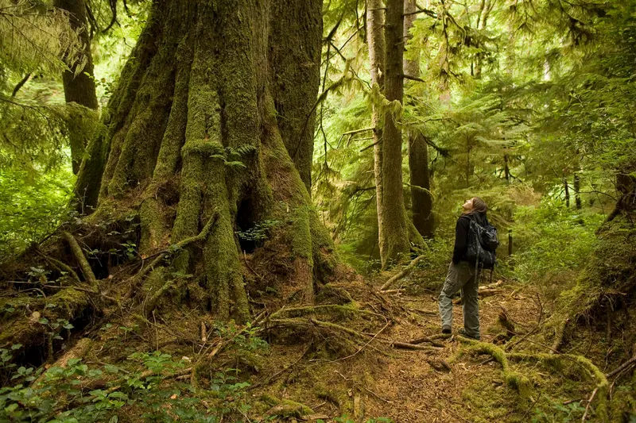

Exploring Late-Successional Habitat
Why Late-Successional Forests?
Late-successional forests play a crucial role in maintaining biodiversity and supporting ecosystem health. The forests we describe in this short web application are concentrated on the western side of the Cascade Range along the coast of Oregon, USA. The 2022 “Executive Order on Strengthening the Nation’s Forests, Communities, and Local Economies” highlighted the ecosystem resilience of these forests and noted their ecological significance to maintaining biodiversity, sequestering carbon, and regulating a healthy, functioning water cycle (See Barnett et al., (2023) and DellaSala et al., 2022).
Closed vs. Open Canopy
Late-successional forests can also be difficult to define, from an ecological point of view (Gray et al., 2023). For example they are often characterized as “closed canopy”, but this may not always be the case as fire-dependent ecosystems may have “open-canopy”, late-succession habitat. For example, riparian ecosystems may naturally have frequent ice scouring and/or flooding that removes some, but not all trees (e.g., Estes et al., 2023).
Late-successional, fire adapted ecosystems can have frequent surface fires that keep the canopy relatively open while preserving older and taller trees (e.g., Mugnani et al., 2019) that are characteristic of this forest type. Broadening the definition of late-successional forests to include both closed and open canopy ecosystems provides a more accurate estimate of the remaining late-successional forests, aids in the identification of key areas for conservation and helps identify positive or negative trends.

Objectives
- Map out ecosystem footprints (called “Biophysical Settings” in LANDFIRE data), for the area of interest.
- Use LANDFIRE Biophysical Settings models and descriptions to estimate reference (pre-European Colonization) amounts of late succession habitat, open and closed.
- Compare reference estimates to current amounts of late succession habitat.
- Explore the use of LANDFIRE data to assess late succession.